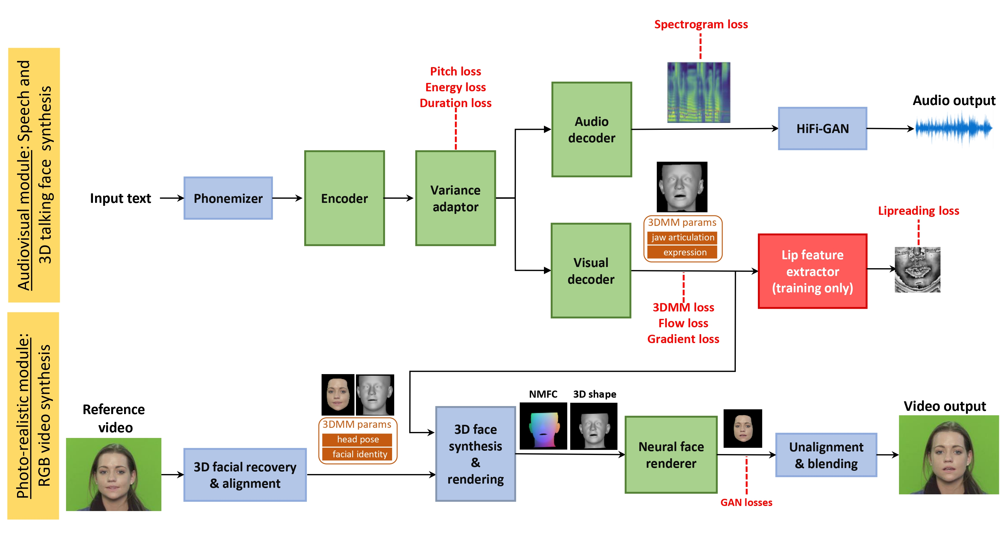

Recent advances in deep learning for sequential data have given rise to fast and powerful models that produce realistic videos of talking humans. The state of the art in talking face generation focuses mainly on lip-syncing, being conditioned on audio clips. However, having the ability to synthesize talking humans from text transcriptions rather than audio is particularly beneficial for many applications and is expected to receive more and more attention, following the recent breakthroughs in large language models. For that, most methods implement a cascaded 2-stage architecture of a text-to-speech module followed by an audio-driven talking face generator, but this ignores the highly complex interplay between audio and visual streams that occurs during speaking. In this paper, we propose the first, to the best of our knowledge, text-driven audiovisual speech synthesizer that uses Transformers and does not follow a cascaded approach. Our method, which we call NEUral Text to ARticulate Talk (NEUTART), is a talking face generator that uses a joint audiovisual feature space, as well as speech-informed 3D facial reconstructions and a lip-reading loss for visual supervision. The proposed model produces photorealistic talking face videos with human-like articulation and well-synced audiovisual streams. Our experiments on audiovisual datasets as well as in-the-wild videos reveal state-of-the-art generation quality both in terms of objective metrics and human evaluation.
Our model uses two modules for photo-realistic audiovisual speech synthesis. The first module maps the input text to audio as well as a synced 3D talking head. The photo-realistic module swaps the face from a reference video with a face predicted from the 3D talking head. The two modules are coupled during inference, but are trained separately.

@misc{milis2023neural,
title={Neural Text to Articulate Talk: Deep Text to Audiovisual Speech Synthesis achieving both Auditory and Photo-realism},
author={Milis, Georgios and Filntisis, Panagiotis P. and Roussos, Anastasios and Maragos, Petros},
journal={arXiv preprint arXiv:2312.06613},
year={2023}
}